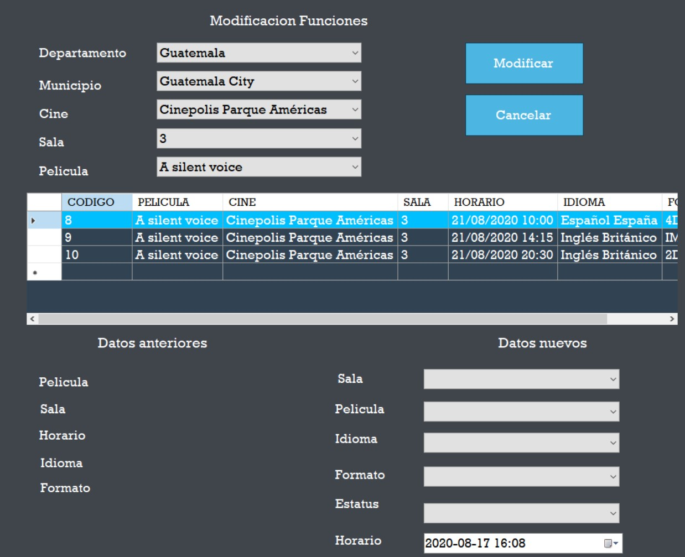
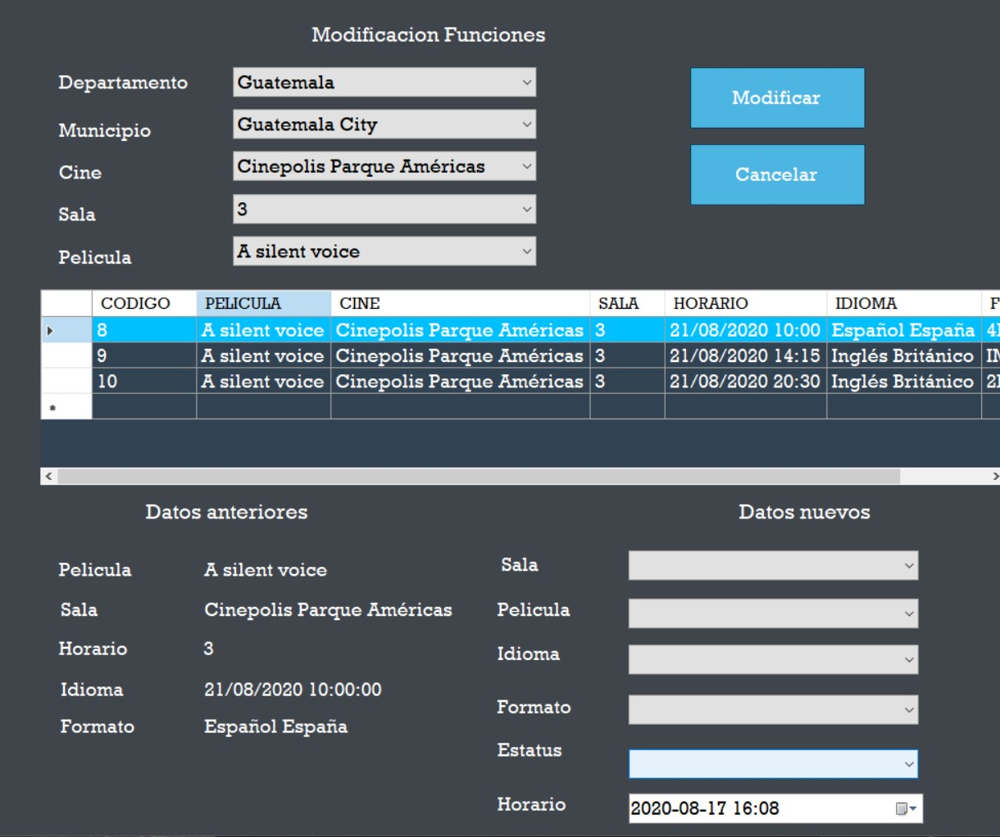

Para modificar una funcion primero hay que llenar los campos departamento, municipio, cine y sala.
Despues de haber llenado los campos anteriores en el campo Pelicula se le mostraran las peliculas relacionadas con la sala seleccionada anteriormente, al seleccionar una pelicula se le mostrar lo siguiente.
Para modificar los datos de la funcion debera dar click en alguno de los datos de la tabla para que se le muestren, en la seccion de Datos anteriores, despues de haber seleccionado el dato de la tabla, se mostrara los siguiente.
Llegado a este punto ya puede comenzar a modificar los datos de la funcion que selecciono anteriormente, los nuevos datos de la funcion sera los seccion de Datos nuevos.
Con todos los campos llenos, ya puede presionar el boton de Modificar para que los datos queden guardados.